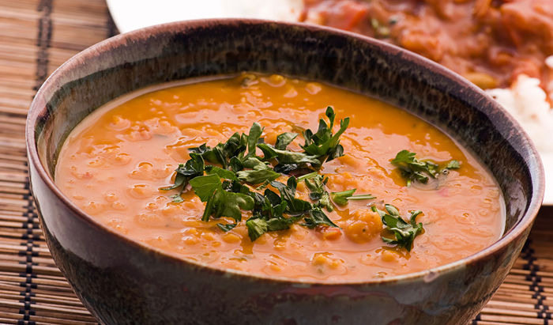

1 чаша грав
4 чаши вода
6-10 средни тиквички
5 моркови
2 стебленца целер
2 лажици вегета
4 средни главици кромид, исецкани
3 стебленца праз, ситно исецкани
2 стебленца кељ
2 шољи шитаке печурки
Ставете го гравот на многу тивок оган. Кога ќе зоврие додадете ги тиквичките. Потоа сомелете ги во блендер, целерот, морковот и додадете ги во тенџерето. Додадете малку вегета, ставете го кромидот и празот исто така во блендер и сомелената смеса ставете ја во супата. Добиената смеса преместете ја во друга тава и одделете ги тиквичките. Откако ќе ги одделите тиквичките сомелете ги и нив во блендер додека не добиете смеса како крем. Добиената смеса вратете ја во тенџерето, а потоа додадете ги печурките. Оставете да се вари се додека не зоврие гравот. Вкупно време за подготовка на овој рецепт е 2 часа. 